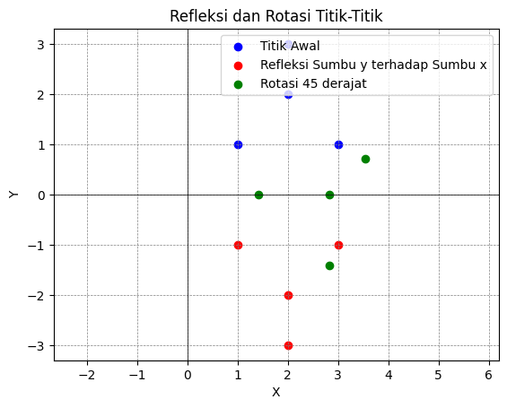
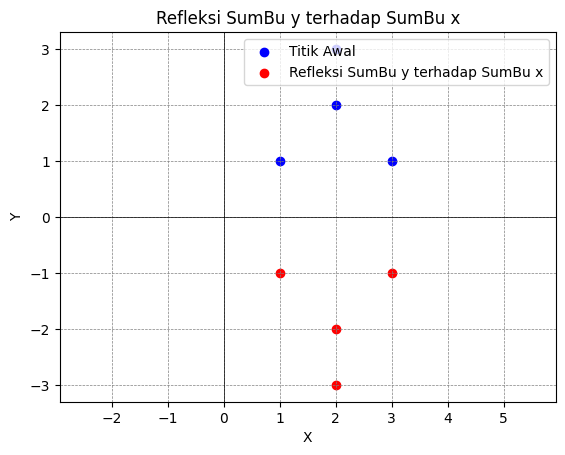
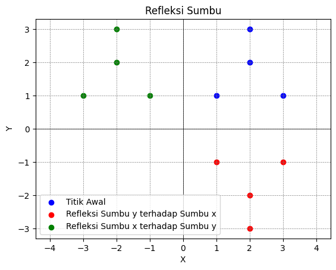

Transformasi linier#
adalah Suatu fungsi yang memetakan suatu vektor di ruang vektor V ke ruang vektor W.
##Rotasi adalah salah satu transformasi yang memutar setiap titik sampai sudut dan arah tertentu terhadap titik yang tetap. Titik tetap tersebut merupakan pusat rotasi, besarnya sudut dari bayangan benda terhadap posisi awal disebut sudut rotasi.
import numpy as np
import matplotlib.pyplot as plt
# Fungsi untuk membuat matriks rotasi
def rotation_matrix(theta):
return np.array([
[np.cos(theta), -np.sin(theta)],
[np.sin(theta), np.cos(theta)]
])
# Matriks refleksi sumbu y terhadap sumbu x
reflection_matrix = np.array([
[1, 0],
[0, -1]
])
# Sudut rotasi (dalam radian)
theta = np.pi / 4 # 45 derajat
# Matriks rotasi
rot_matrix = rotation_matrix(theta)
# Titik awal
points = np.array([
[1, 1],
[2, 2],
[3, 1],
[2, 3]
])
# Mengalikan setiap titik dengan matriks refleksi untuk mendapatkan titik yang direfleksikan
reflected_points = np.dot(points, reflection_matrix)
# Mengalikan setiap titik dengan matriks rotasi untuk mendapatkan titik yang dirotasi
rotated_points = np.dot(points, rot_matrix)
# Plot titik-titik awal
plt.scatter(points[:,0], points[:,1], color='blue', label='Titik Awal')
# Plot titik-titik yang direfleksikan
plt.scatter(reflected_points[:,0], reflected_points[:,1], color='red', label='Refleksi Sumbu y terhadap Sumbu x')
# Plot titik-titik yang dirotasi
plt.scatter(rotated_points[:,0], rotated_points[:,1], color='green', label='Rotasi 45 derajat')
plt.axhline(0, color='black',linewidth=0.5)
plt.axvline(0, color='black',linewidth=0.5)
plt.grid(color = 'gray', linestyle = '--', linewidth = 0.5)
plt.xlabel('X')
plt.ylabel('Y')
plt.title('Refleksi dan Rotasi Titik-Titik')
plt.legend()
plt.axis('equal')
plt.show()

##Refleksi adalah transformasi yang memindahkan titik bidang lewat sifat bayangan suatu cermin.
contoh:
code Bentuk visualisasi refleksi sumbu x
code Bentuk visualisasi refleksi sumbu Y
import numpy as np
import matplotlib.pyplot as plt
# Matriks refleksi sumbu y terhadap sumbu x
reflection_matrix = np.array([
[1, 0],
[0, -1]
])
# Titik awal
points = np.array([
[1, 1],
[2, 2],
[3, 1],
[2, 3]
])
# Mengalikan setiap titik dengan matriks refleksi untuk mendapatkan titik yang direfleksikan
reflected_points = np.dot(points, reflection_matrix)
# Plot titik-titik awal
plt.scatter(points[:,0], points[:,1], color='blue', label='Titik Awal')
# Plot titik-titik yang direfleksikan
plt.scatter(reflected_points[:,0], reflected_points[:,1], color='red', label='Refleksi SumBu y terhadap SumBu x')
plt.axhline(0, color='black',linewidth=0.5)
plt.axvline(0, color='black',linewidth=0.5)
plt.grid(color = 'gray', linestyle = '--', linewidth = 0.5)
plt.xlabel('X')
plt.ylabel('Y')
plt.title('Refleksi SumBu y terhadap SumBu x')
plt.legend()
plt.axis('equal')
plt.show()

import numpy as np
import matplotlib.pyplot as plt
# Matriks refleksi sumbu y terhadap sumbu x
reflection_yx_matrix = np.array([
[1, 0],
[0, -1]
])
# Matriks refleksi sumbu x terhadap sumbu y
reflection_xy_matrix = np.array([
[-1, 0],
[0, 1]
])
# Titik awal
points = np.array([
[1, 1],
[2, 2],
[3, 1],
[2, 3]
])
# Mengalikan setiap titik dengan matriks refleksi untuk mendapatkan titik yang direfleksikan
reflected_points_yx = np.dot(points, reflection_yx_matrix)
reflected_points_xy = np.dot(points, reflection_xy_matrix)
# Plot titik-titik awal
plt.scatter(points[:, 0], points[:, 1], color='blue', label='Titik Awal')
# Plot titik-titik yang direfleksikan terhadap sumbu y ke sumbu x
plt.scatter(reflected_points_yx[:, 0], reflected_points_yx[:, 1], color='red', label='Refleksi Sumbu y terhadap Sumbu x')
# Plot titik-titik yang direfleksikan terhadap sumbu x ke sumbu y
plt.scatter(reflected_points_xy[:, 0], reflected_points_xy[:, 1], color='green', label='Refleksi Sumbu x terhadap Sumbu y')
plt.axhline(0, color='black', linewidth=0.5)
plt.axvline(0, color='black', linewidth=0.5)
plt.grid(color='gray', linestyle='--', linewidth=0.5)
plt.xlabel('X')
plt.ylabel('Y')
plt.title('Refleksi Sumbu')
plt.legend()
plt.axis('equal')
plt.show()
